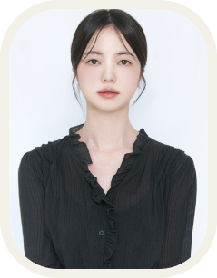
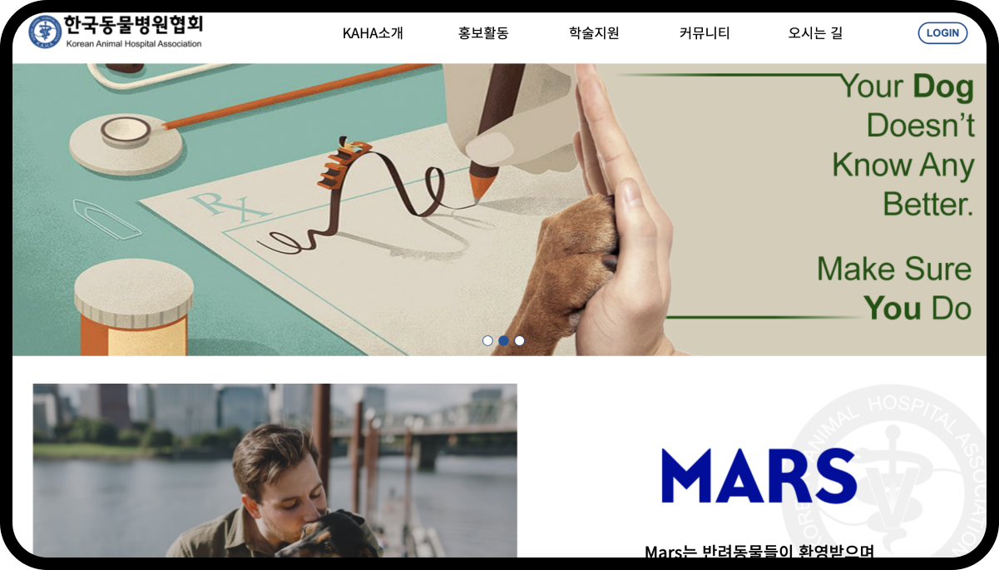

Profile

이름 : 양소정
생년월일 : 1998년 5월 16일 (25세)
안녕하세요
신입 UX/UI 디자이너 양소정입니다.
이 웹사이트는 포트폴리오 용도로 제작되었습니다.
2022.02
강원대학교 생활조형디자인학과 졸업
Skill
포토샵 일러스트 HTML/CSS 피그마
Web Design
Korea Animal Hospital Association

Over view
사이트 리뉴얼 및 모바일 제작
About the work
제작기간 : 3주
사용기술 : 피그마 ,HTML , CSS , Javascript
작품설명 : PC를 모바일로 제작 및
불필요한 요소를 버리고 필요한
요소 추가 및 개선
팀프로젝트(5명작업)
한국 동물 병원 협회 홈페이지
한국동물병원협회란,
소동물 임상수의사의 학술능력 향상을 도모하며, 상호간의 친목을 돈독히 하고
직업 윤리관을 정립 실천하며, 밖으로 임상수의사의권익(수의권)을 옹호하고
대국민 최일선의 수의사로서 수의사상 확립에 노력하여 사회의 발전에 기여함을
그 목적으로 합니다.
제작 개요
디자인 구조를 재구성하여 메인 페이지를 풍부하고 트렌디하게 리뉴얼 및 브랜드 이미지를 강화한다.
불필요한 메뉴가 많아 찾고자 하는 정보를 쉽게 찾을 수 없다.
PC와 모바일을 모두 지원 할 수 있는 반응형 웹사이트로 접근성이 쉽도록 한다.
문제점

01
불필요한 요소가 많으며,
필요한 요소는 부족하다.
02
메뉴가 많아 찾고자
하는 것을 찾기 어렵다.
03
이미지와 텍스트가 몰려 있어
보기 좋지 않다.
스타일 가이드
text
Noto Sans KR
Bold
모든 인류 구성원의 천부의 존엄성과 동등하고 양도할 수 없는 권리를 인정하는
Perfect Competitiveness with Perfect Competitiveness
Medium
모든 인류 구성원의 천부의 존엄성과 동등하고 양도할 수 없는 권리를 인정하는
Perfect Competitiveness with Perfect Competitiveness
Regular
모든 인류 구성원의 천부의 존엄성과 동등하고 양도할 수 없는 권리를 인정하는
Perfect Competitiveness with Perfect Competitiveness
color

문제 해결

결과

Web Design
Seocho Animal Love Center

제작기간 : 디자인 일 , 퍼블리싱 일
사용기술 : 피그마 ,HTML , CSS , Javascript
작품설명 : PC를 모바일로 제작 및
불필요한 요소를 버리고 필요한
요소 추가 및 개선
팀프로젝트(5명작업)
overview
서초동물사랑센터는 유기·유실 동물을 줄이고
올바른 반려동물 문화를 조성하기 위해
유실∙유기견의 반환 및 입양을 돕는 입양센터이자 반려견 기초교육 프로그램을 제공하는 교육센터입니다.
BackGround

Improvement

개선 제작
손쉽게 문의 할 수 있도록 설계
설명보다는 이미지를 크게 해
눈에 띄도록하여 강조하였습니다.
제일 중요한 상담을 바로 할 수 있도록
상담카톡버튼을 잘 보이도록 설계하였습니다.

결과